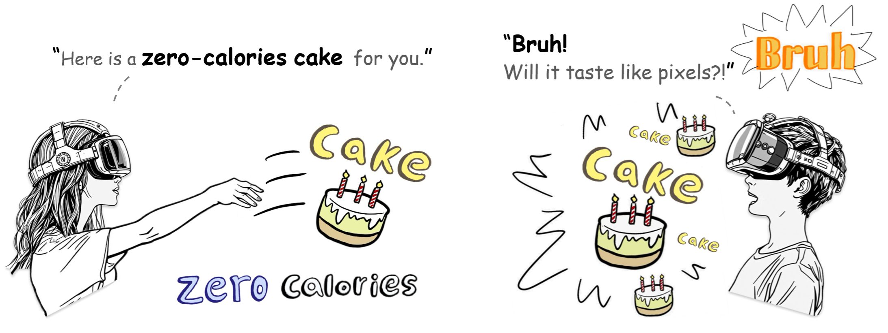

Hi there! I am Yu Zhang (张宇), a Ph.D. candidate at the Department of Computer Science, City University of Hong Kong.
My research interests focus on the intersection of human-computer interaction (HCI), mixed reality (MR), social computing and science communication. I am currently supervised by Dr. Jiawei Ma at CityU, and co-supervised by Dr. Zhicong Lu . Besides, I am also advised by Dr. Yun Wang from Microsoft Research Asia (MSRA).
Previously, I received a master's degree in data science and professional computing from The Australian National University, and a bachelor's degree in computer science and technology from Beihang University (BUAA), Before starting Ph.D. programme, I used to be a full-stack software engineer at Thoughtworks.
News
Publications
